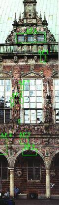
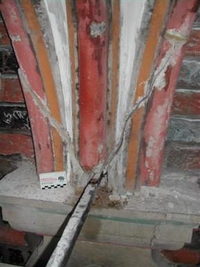
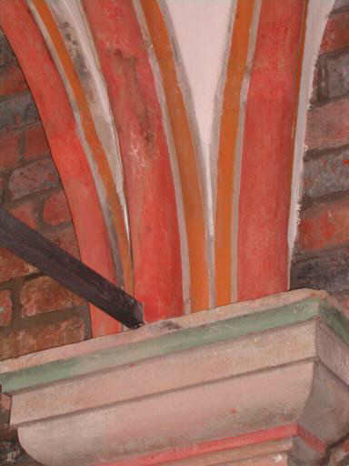
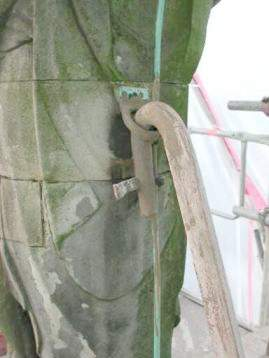
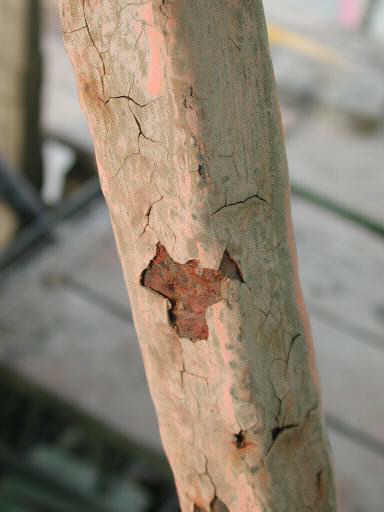
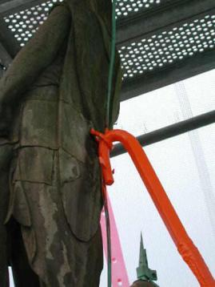
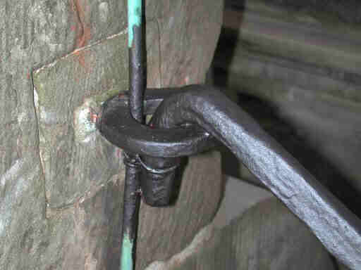
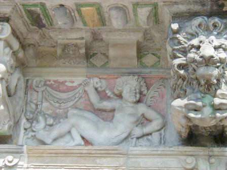
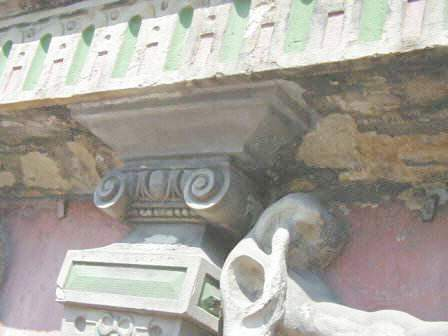
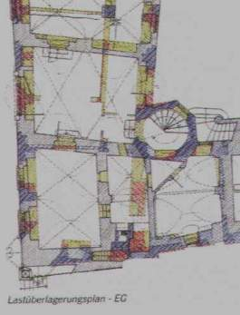

Weitere Datenübertragung Ihres Webseitenbesuchs an Google durch ein Opt-Out-Cookie stoppen - Klick!
Stop transferring your visit data to Google by a Opt-Out-Cookie - click!: Stop Google Analytics
Cookie Info. Datenschutzerklärung
Altbau und Denkmalpflege Informationen - Startseite / Impressum
Fast Alles, bestimmt jedoch das Wichtigste zum besseren Bauen für Bauherren und
Baufachleute in Tagesseminaren bundesweit
Referenzen von Bauherren und Behörden
Spannende Bau-Umfragen - Machen Sie mit!

Konrad Fischer
Fassadenrestaurierung/Fassadensanierung: Musterachse - Beispiel Rathaus Bremen
Testfeld/Testfläche Fassadeninstandsetzung als perfekte Planungsgrundlage
Sparsam Planen und Bauen im Altbau - Voraussetzungen und Methoden 1.14
In Unterseiten aufgeteilt: 1:
Einleitung:1.1 1.2 1.3 1.4 Der Krieg gegen die
Bausubstanz:1.5 1.6 1.7 1.8 1.9 1.10 1.11
Kapitel 1: Projektentwicklung:1.12
Kapitel 2: Bauvorbereitung1.13 1.14
Kapitel 3: Funktions-, Entwurfs-, Ausführungs- und Kostenplanung:1.15
Kapitel 4: Konstruktionsplanung:1.16
Haustechnikplanung:1.17
Altbaugeeignete Reparaturverfahren und
Alternativen zu zerstörerischen Sanierverfahren 1 2.2
Kapitel 5: Maßnahmen- und Kostenplanung
Kapitel 6: Bauablauf
Kapitel 7: Planungsvoraussetzungen
Planauszüge und Fotos:
Konrad Fischer, Hochstadt a. Main (soweit nicht anders angegeben)
Beispiel: Unser Musterachsenprojekt am historischen Rathaus Bremen - Vorbereitung zur nachtragsarmen Baumaßnahme

Die Süd-Fassade nach Restaurierung - kein historisierender oder frei interpretierender Gestaltwandel, nur Reparatur nach
unbeschränkter öffentlicher Ausschreibung! Bei erheblicher
Budgetunterschreitung durch nachtragsarme Ausschreibungsmethode.

Die für wenige Wochen eingehauste Musterachse. Hier konnte das Winterhalbjahr genutzt werden, um bis ins letzte Detail
Schäden zu entdecken, zu analysieren und die technisch und wirtschaftlich
besten Reparaturmaßnahmen zu entwickeln. Natürlich mit Gegenkontrolle
nach winterlicher Bewitterung im Frühjahr vom Hubsteiger aus.

Kartierungen an photogrammetrischen Bestandsaufnahmen (Photogrammetrie - maßstabsgerechte Fotografie) belegen
alle getroffenen Planungsentscheidungen auch bei der späteren Bauzeit. Allein die Firmen-Abrechnungs-Dokumentation des im Detail
angetroffenen Vorzustands, der mit der Bauleitung anhand der sich in der Musterachse bewährten, ausgeschriebenen, dann lokal festgelegten und
durchgeführten Maßnahmen füllt über 12 Leitzordner. Und wie läuft
das mit der Dokumentationspflicht gem. Charta von Venedig sonst? Und mit der im Detail prüffähigen Abrechnung? Eben. In so einem Fall
braucht es eben keine steingerechte Bauzeichnungen für teuer Geld und teuer Zeit. Und auch keine Blödsinnsmaßnahmenkartierung,
die dann von der späteren Bauwirklichkeit ad Absurdum geführt wird und nur des Denkmalpflegers und Bauforschers Brust schwellen läßt.
Tip: Immer abwägen, was die Maßnahme wirklich braucht.

Die mauerwerkszerstörenden gerissenen und kapillarsaugenden Zementfugen früherer Handwerks- und Denkmalschlaumeier
blieben überwiegend - kosten- und denkmalsubstanzsparend - drin! Ihre wassersaugenden Löcher und Risse wurden allerdings mit
Luftkalkmörtel harmlos geschlossen. Alle Steine wurden begutachtet und nur wo technisch notwendig
repariert. Man sieht die Kartierung aus Kreidebezeichnung.

Mauerwerk der Musterachse: Zerstörungsgrad und
Reparaturbereich direkt über dem Fenstergiebel mit preisgünstigster
Kalkmörtelergänzung auch im Backsteinbereich. Es muß nicht
immer nachgeschnitztes Gold sein, nur damit sich die Restaurierhelden darin sonnen können!

Einzementierte Eisenanker, deren gesamtes Schadensbild
und die daraus abzuleitenden Maßnahmen nur nach Freilegung im Musterachsenbereich
ausschreibungs- und kostenkontrollfähig wurden.

Eisenanker nach
Reparatur - nach Teilergänzung verrosteter Bereiche und Hochqualitätsrostschutz
(Bleimennige in Leinöl, Glimmerfarbe in Leinöl-Standöl)
nun in elastischem Kalkmörtel eingebettet.

Detail Befestigung Giebelfigur in Musterachse. Restauratoren
und Bauchemie - die Originaloberfläche wurde früher mit Spezialwasserglasfestiger
(auf Empfehlung einer Frau Dr. des Bayer. Denkmalamts, Schreiben liegt
mir vor) vollgetränkt. Nun schuppt wie immer (vergleichen Sie selbst!)
alles krustig und pustelig ab und hält schwarzvergrünend Wasser
zurück. Die Renaissancehaut schwindet dahin. Hat aber
jahrhundertelang
gehalten, bis modernes Schlaumeiertum aus Behörde,
Restaurierung,
Handwerk und Bauchemie tätig wurde.

Auch der moderne Rostschutz am Ankereisen der Giebelfigur
ist der letzte Dreck, wenn es aus dem Industrie-Labor in die
Wirklichkeit
geht. Er macht die Bewegungen des Eisens nicht mit, kann nur
beschichten
und sich im Mikrogefüge der Metalloberfläche nicht
sauerstoffersetzend
verankern.

Besser ist da die altbewährte Bleimennige. Sie kann als aktiver Rostschutz perfekt passivieren, in Leinöl
gebunden bis in das letzte mikrokristalline Löchlein der Oberfläche flutschen
und dauerhaft schützen (handwerksgerechte Verarbeitung und Sorgfalt
vorausgesetzt!). Üblicherweise bevorzugt der Planer aber Schnellschmier-Industriemüll,
der "leichter verfügbar" ist und kein Bemühen um Ausnahmegenehmigung
betr. Arbeitsschutz erfordert. Gottseidank war ich hier nicht nur als Gebäude-,
sondern auch als SiGeKo-Planer tätig.

Oberflächenschutz der Bleimennige mit einer Leinöl-Standöl-Eisenglimmer-Farbe. Das hält wirklich
und ist trotzdem - öffentlich ausgeschrieben - preisgünstig.

Reparaturmuster an der Gesimsuntersicht links. Ziel: Nur technisch nachteilige lose wasserglasversalzte- und -festigte
Krusten abnehmen. Bonbonsüßes Farbkonzept 60er Jahre (mit zerstörerischen Wasserglasfarben!)
wird hingenommen. Leichte Retuschen mit rissfüllender Kalkfarbe nur,
wo stark störend aus Fernsicht. Nahezu keine Profilergänzungen.
Der über Jahrhunderte geschundene Gesamteindruck, die gealterte Haut, die geschichtlich verdichtete Gesamterscheinung
bleiben ungestört von schöpferischer Denkmaltümelei und sehr sehr
preisgünstig erhalten. Das Muster belegt diese Machart auch als Grundlage für die Gesamtreparatur.

Detail Musterreparatur an Oberfläche. Links nur gereinigt, rechts mit Retuschevorschlag. Fehlstellen im Gold nur mit
Kalkocker ergänzt! Absandelnde Flächen mit Feinkalkschlämme guter Eindringtiefe ohne die sonst übliche Krustenbildung,
Schalenüberfestigung und Trocknungsblockade gesichert (man könnte auch gefestigt sagen,
wenn dieses Wort nicht schon dermaßen zum Formenkreis des Mißbrauchs
und der Vergewaltigung der Denkmalhaut gehören würde).
Auch ein öffentlicher Bauherr sollte nicht immer von Edeldenkmalputzpolitür
ausgeblutet werden! Wenigstens Werder-Fan Löwe ist damit auch zufrieden.
Sein goldiger Ball (Sonne hat astronomisches Haus im Löwen!) bleibt
nur dem Eingeweihten ein gülden Symbol.

Scheußlich, was Wasserglas alles an Oberkirchner Sandstein, Deutschlands erste Qualität, anrichten kann. Wir
haben das nun mit pigmentierter Kalktünche vor weiterer Verwitterung geschützt
- Muster am Kapitell. Sie zerkrustet, zersalzt und zerfeuchtet die Fassade
nicht. Konstruktions- und Ausführungsdetails muß man dafür
freilich selbst entwickeln, vorgefertigte Texte gibt es nicht. Im Unterschied
zu den synthetischen und deswegen fassadenzerstörenden Farbrezepturen moderner Baualchymie.

In der Ausführungsphase überzieht dann der
beauftragte Handwerker das ganze Bauwerk mit einem dichten Netz aus Kreide-Kartierung
- Positionsnummern aus dem Leistungsverzeichnis. Das wird mit der Bauleitung
abgestimmt und nach geglückter Bemusterung von Bauherr, Oberbauleitung
und Denkmalpflege zur Ausführung freigegeben.
Parallel dazu Eintrag der Flächen und Nummern
in die Abrechnungszeichnung auf Grundlage der Fotogrammetrie. Die perfekte
Dokumentation für den Rechnungshof - den Bauherrn und das Denkmalarchiv
für spätere Maßnahmen und Erfolgskontrolle.
Nachmachen!
Wichtig: Auch historische Tragwerke kann man auf Weiterverwendung außerhalb vernichtender Normberechnung experimentell testen
und so die wahren Rechengrößen ermitteln.

Weißenfels-Geleitshaus: Lastüberlagungsplan als geometrische Projektion der in die Decken- und
Wandkonstruktionen eingeleiteten Lasten. Die Farbtiefe und Schraffurdichte bildet die jeweilige Belastungssituation
ab. Diese Bestandsdarstellung dient dem Tragwerksplaner zur gezielten Schadensbeurteilung
und technisch sowie wirtschaftlich angemessenen Tragwerks-Reparaturplanung.
Noch nicht genug? Dann hier weiter zur Fortsetzung
In Unterseiten aufgeteilt: 1:
Einleitung:1.1 1.2 1.3 1.4 Der Krieg gegen die
Bausubstanz:1.5 1.6 1.7 1.8 1.9 1.10 1.11
Kapitel 1: Projektentwicklung:1.12
Kapitel 2: Bauvorbereitung1.13 1.14
Kapitel 3: Funktions-, Entwurfs-, Ausführungs- und Kostenplanung:1.15
Kapitel 4: Konstruktionsplanung:1.16
Haustechnikplanung:1.17
Altbaugeeignete Reparaturverfahren und Alternativen zu zerstörerischen
Sanierverfahren 1 2.2
Kapitel 5: Maßnahmen- und Kostenplanung
Kapitel 6: Bauablauf
Kapitel 7: Planungsvoraussetzungen
Andere Seiten:
Baustoffseite
Energiesparseite
Finanzierung
Wirtschaftlichkeit
Arbeitshilfen/Formulare (z.B. Planungsvertrag
für Altbau, Raumbuchsystem) zum Bestellen
Altbau und Denkmalpflege Informationen Startseite